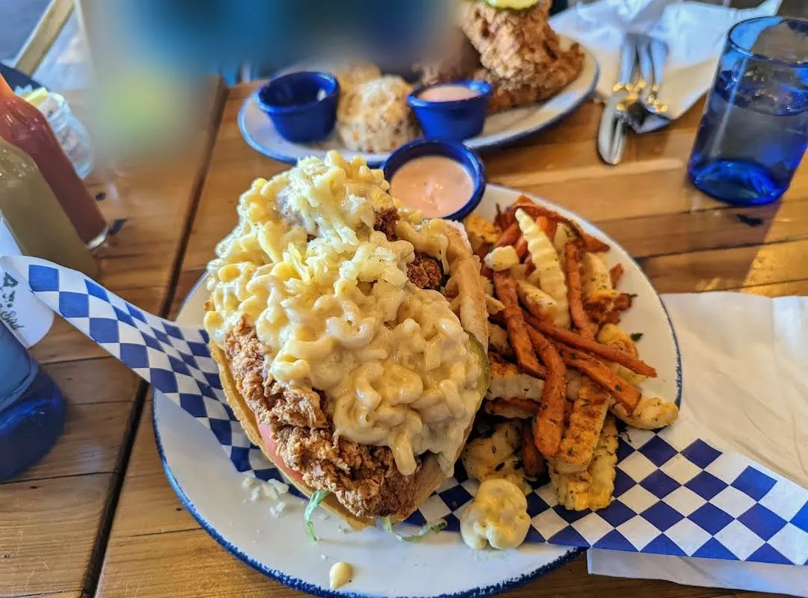

Best Places to Eat in Las Vegas & Henderson
Where I actually eat close to home, from Chinatown burgers to a Hawaiian plate lunch in Henderson.
 #1
#19th Island Grill
A Henderson favorite for a Hawaiian mixed plate of BBQ chicken and chicken katsu with rice and mac salad. The pulled pork sandwich was a winner too, and every sauce comes on the side.
 #2
#2Fuku Burger Chinatown
Great burgers and fries in Chinatown. The bacon-loaded BUTA and the TAMAGO with a runny egg are the ones to get.
 #3
#3Hash House A Go Go (Plaza)
Great food and friendly, attentive service downtown. The fried chicken eggs Benedict and a pancake to share made it an easy one to recommend.
 #4
#4Slater's 50/50
A relaxed spot off the Strip with excellent burgers, standout crispy bacon, and fried mac and cheese balls that are crispy outside and creamy inside.

#5Mama Bird Southern Kitchen
Very good and unlike anything else on this list: a fried chicken waffle taco piled with mac and cheese, plus chicken tenders with biscuits.